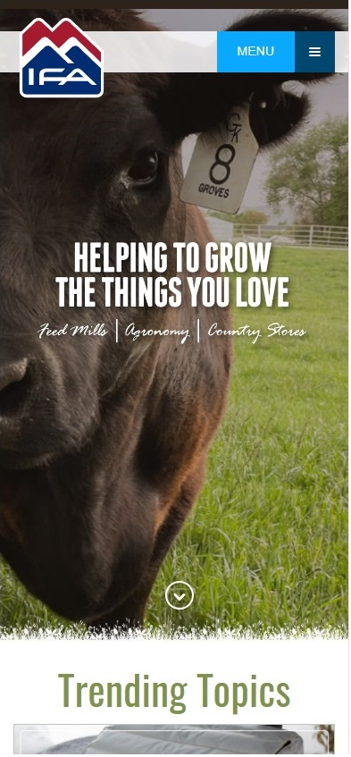
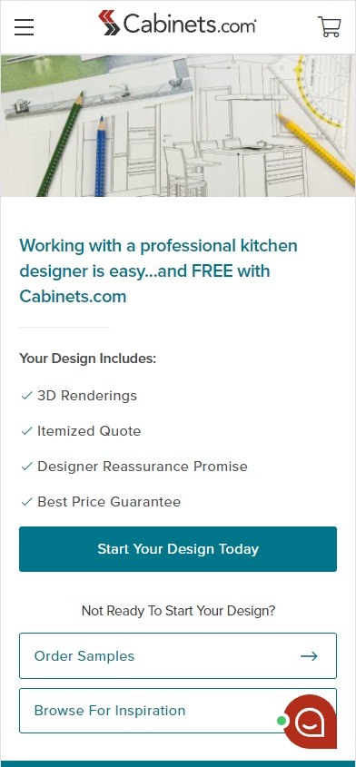

Design Principles Document
Mary Ann Overson
Visual Hierarchy
IFA Country Stores Visual Hierarchy is apparent in IFA's website, no matter what viewport. the page is very easily navigated, with the most important elements larger than the topics that are secondary and beyond. The whole home page is well structured, clean, and uncluttered. I find myself drawn to the design of this website.
White Space and Clean Design
Cabinets.com Cabinets.com has a website that illustrates white space in the viewport. All of the text, buttons, and text boxes are well-spaced, clustered where they are related, with plenty of white space in between. The white space isn't so generous as to be confusing.
White Space and Clean Design
Cabinets.com
Cabinets.com has a website that illustrates white space in the viewport. All of the text, buttons, and text boxes are well-spaced, clustered where they are related, with plenty of white space in between. The white space isn't so generous as to be confusing, or hide sections if you fail to scroll down.